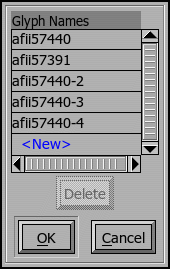

Text
justification is handled differently in different scripts and in different
languages within those scripts.
Text
justification is handled differently in different scripts and in different
languages within those scripts.
Text
justification is handled differently in different scripts and in different
languages within those scripts.
In arabic special glyphs (called kashidas) are inserted into the text to fill up space, in latin interword spacing and even the within word letter spacing can be adjusted.
But more sophisticated behaviors are possible. In some circumstances it might be appropriate to turn off ligatures, something which (in latin at least) will usually add a little more space to the line. In other cases a special kerning lookup might be invoked.
OpenType allows a fairly general approach to this. Information is organized by script, and then by language within the script.
The extender list is specified at the script level. You may either enter a series of glyph names into the space provided in the dialog above, or click on the little box to the right and a dialog will pop up giving a more convenient entry mechanism.
Several different priority levels may be specified within a language. The
first priority level will be invoked to make small adjustments to spacing.
If this is not enough to fix the problem then the second level will be invoked
(in addition to the first, I believe). If the second level is not enough
then third, fourth, fifth... levels will be invoked in turn until the line
can be justified.

Each priority level consists of two parts, a series of behaviors for when the line is too long (and needs to be make smaller) and another series for when the line is too short (and needs to be extended). Each of these, in turn consists of a set of lookups (in either GPOS or GSUB) to turn on, a set of lookups to turn off, and finally a special lookup which specifies the maximum amount the advance width of a glyph can change.
 So if you want to make a line shorter you might turn
on ligatures and turn on kerning. Both of which (usually) make text shorter.
On the other hand if you want to make a line longer you might want to turn
those same lookups off.
So if you want to make a line shorter you might turn
on ligatures and turn on kerning. Both of which (usually) make text shorter.
On the other hand if you want to make a line longer you might want to turn
those same lookups off.
The maximum advance width lookups are a little different from normal lookups. These may be either single positioning GPOS-style lookups or kerning GPOS-style lookups. The lookup does not specify an exact adjustment to a glyph's width, rather it specifies the maximum (in absolute value) amount by which that glyph's width can change. So in latin typesetting you might have a lookup with information solely for the space glyph allowing it to (for instance) double in size when expansion is needed, or half in size when contraction is needed -- or any value between the normative amount and the adjusted maximum. At a higher priority level there might be a set of lookups which adjust the advance width of every glyph.
In theory you could use a kerning lookup to specify the maximum width adjustment allowed between any two glyphs. (The OpenType spec actually says that any GPOS lookup could be used, except for contextual ones (which makes one wonder if contextual chaining lookups are permitted), no semantics are provided for these other lookup types and it is hard to imagine what they might do, so I'm ignoring them).
These maximum lookups look like GPOS lookups, but are stored in the JSTF table. FontForge will display them in the GPOS lookup list but will output them the JSTF table when appropriate.